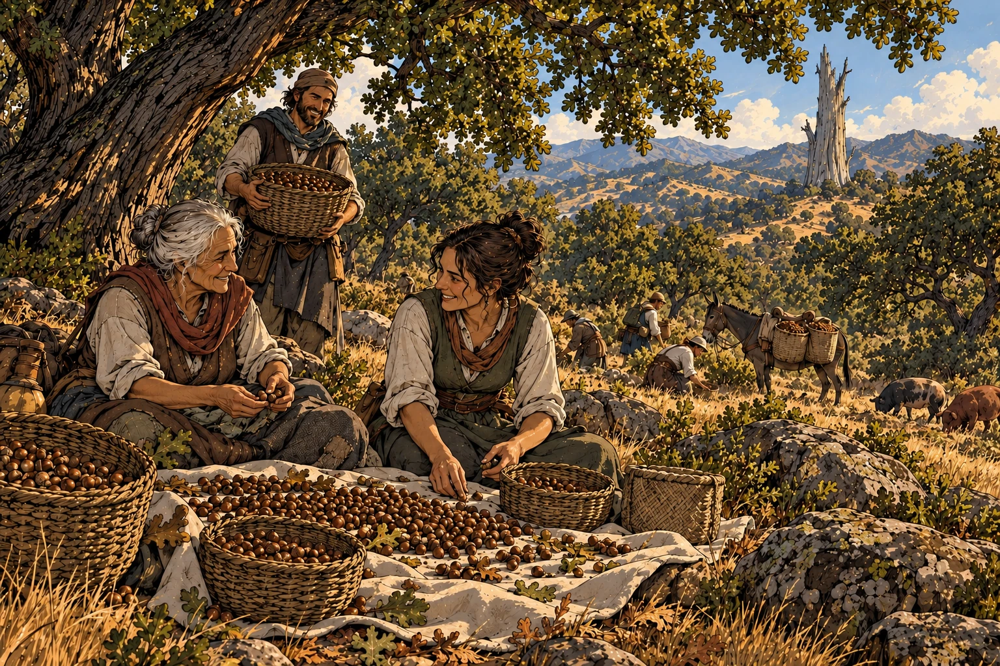
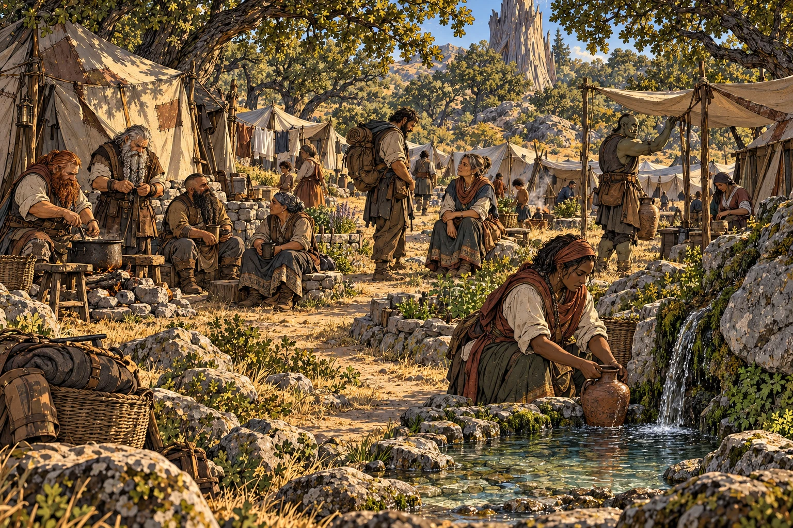

The Elderwood was once a vast forest, a dense wood of massive trees and lush undergrowth. Some say the trees were kept alive by the gods, for after the Godfall the largest trees died under the withering summer heat. But the forest did not die -- it adapted. In place of tall redwoods, a chaparral forest grew, of scrub oak and juniper.
I. The Oak Groves
The people of the Elderwood adapted too. Now, they tend the oak groves, gathering acorns each autumn to dry and grind into flour. They plant barley and lentils in hidden valleys with the winter rains, while goats graze the rough hills and pigs fatten on fallen acorns. The summer is now yellow and dry, and often hard and hot, but villages keep hidden stores against the lean months, sharing food and water as they once shared the shelter of the great trees.

III. A Place by the Fire

But a stranger who reaches the right door can usually find supper and a place by the fire, and maybe a home. So many stay, for a season or a year, or more, often gathering in camps around dependable water, learning the work of the oak groves.